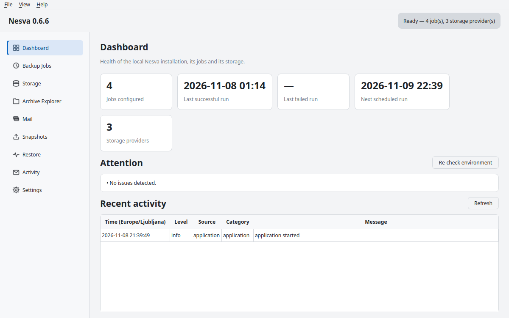
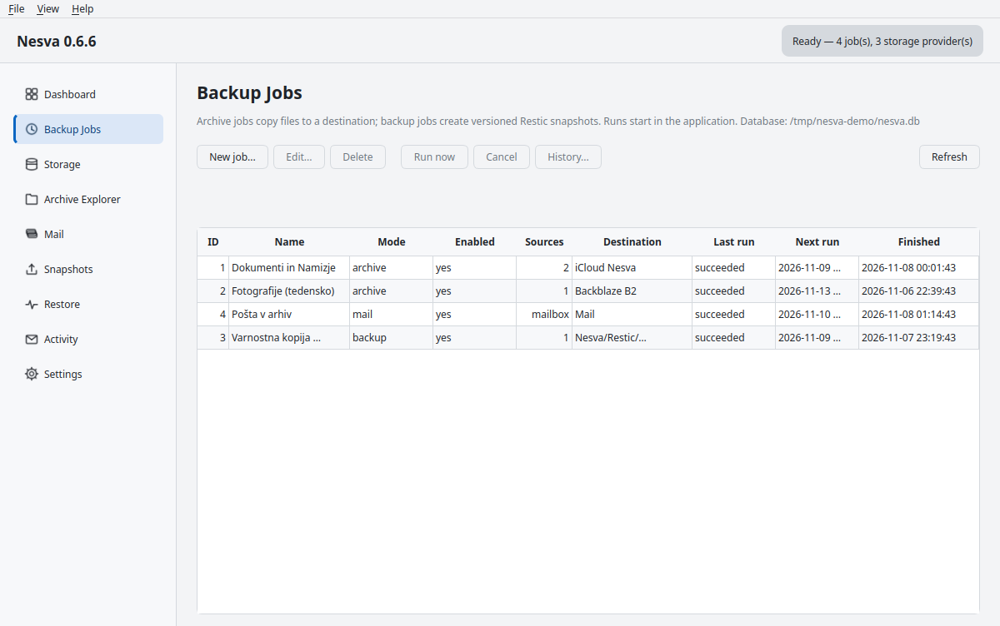
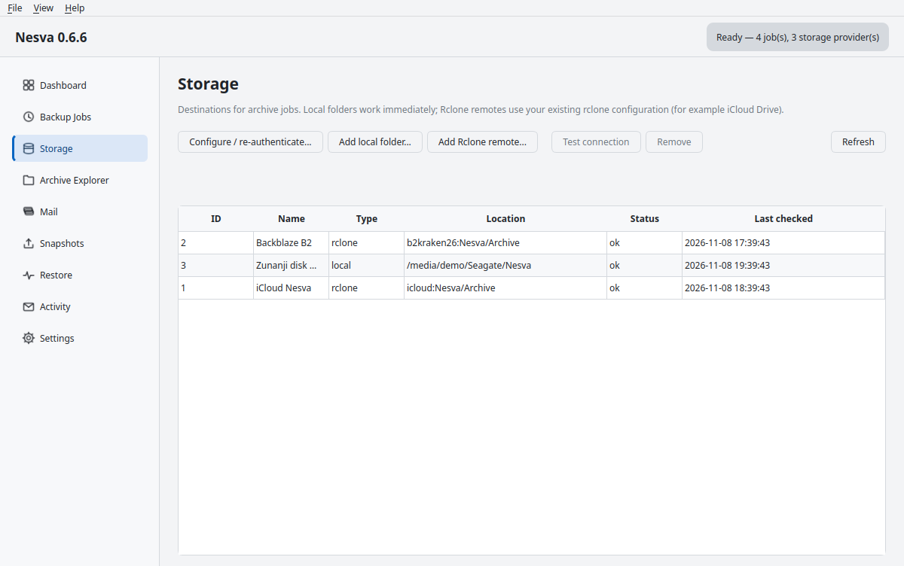

Eine Desktop-Anwendung, die Ihre Dateien und Ihre E-Mails in die Cloud bringt — lesbar und durchsuchbar oder verschlüsselt und mit Versionen.
Nesva ist eine Desktop-Anwendung für zwei verwandte, aber unterschiedliche Aufgaben: das Archivieren von Dateien in Cloud-Speicher und das Sichern mit Versionen. Sie trennt beides bewusst, weil es zwei verschiedene Versprechen sind und es unredlich wäre, sie zu vermischen.
Dateien werden in den Speicher kopiert (iCloud, Google Drive, pCloud, B2, NAS) und bleiben dort lesbar. Sie öffnen sie in der Weboberfläche des Anbieters oder auf dem Telefon — ohne Nesva und ohne Spezialwerkzeug.
Restic schreibt verschlüsselte Snapshots. Jeder Snapshot ist ein vollständiger Zustand, den Sie jederzeit wiederherstellen können — auch nach versehentlichem Löschen oder einem Erpressungstrojaner. Eine Aufbewahrungsregel bestimmt, was bleibt.
.eml exportiert — lesbar, portabel, unabhängig von einer Lizenz.Das Prinzip hinter dem Code: Nesva ist der Transporteur, nie der Eigentümer. Ihre Dateien bleiben Ihre — in der Cloud in einer Form, die der Anbieter versteht, und am ursprünglichen Ort.
Laden Sie nesva-0.6.6-windows-x86_64-setup.exe von GitHub Releases und starten Sie es. Die Installation erfolgt nach %LOCALAPPDATA%\Programs\Nesva, für einen Benutzer, ohne Administratorrechte und ohne UAC-Abfrage. Eine Verknüpfung im Startmenü wird angelegt, ein Eintrag unter „Apps und Features“ erscheint.
Wer es portabel mag: nesva-0.6.6-windows-x86_64.zip entpacken, irgendwo ablegen und nesva.exe starten. Qt und die Compiler-Laufzeit sind enthalten, es muss nichts weiter installiert werden.
# Debian / Ubuntu - empfiehlt rclone und restic sudo apt install ./nesva_0.6.6_amd64.deb # portables Verzeichnis (Qt enthalten, installiert nichts ins System) tar -xzf nesva-0.6.6-linux-x86_64.tar.gz ./nesva-0.6.6-linux-x86_64/bin/nesva
Das Paket installiert die gesamte Anwendung in ein eigenes Verzeichnis, /usr/lib/nesva, und legt in /usr/bin nur Verknüpfungen an. Deshalb kann Nesva keine Qt-Anwendungen des Systems stören — unter KDE und Wayland ist das wichtig.
Ehrlicher Hinweis: Eine Code-Signierung gibt es noch nicht. Windows SmartScreen warnt beim ersten Start; das ist zu erwarten und ohne Zertifikat nicht abzuschalten. macOS wird nicht unterstützt, weil es nie geprüft wurde.
Alle Releases liegen auf GitHub; kein Konto, kein Zwischenhändler, keine Zahlung. Drei Links genügen:
| Was | Link |
|---|---|
| Repository (Code, Dokumentation, Änderungsprotokoll) | github.com/Linux-Alex/Nesva |
| Alle Releases | github.com/Linux-Alex/Nesva/releases |
| Neueste Release — dieser Link ändert sich nie | github.com/Linux-Alex/Nesva/releases/latest |
Jede Release enthält vier Dateien (zwei pro Plattform) und je eine Prüfsummendatei pro Plattform:
<sha256> <Dateiname>; SHA256SUMS-windows.txt deckt beide Windows-Dateien ab.Prüfen Sie die Prüfsumme, bevor Sie etwas starten; unter Linux genügt ein Befehl:
curl -LO https://github.com/Linux-Alex/Nesva/releases/latest/download/SHA256SUMS-linux.txt curl -LO https://github.com/Linux-Alex/Nesva/releases/latest/download/nesva_0.6.6_amd64.deb sha256sum -c SHA256SUMS-linux.txt
Nesva kennt das selbst: Einstellungen → Updates → Jetzt prüfen liest die veröffentlichte Release, Update installieren lädt sie, prüft sie und installiert sie. nesva-cli update und nesva-cli update --install tun dasselbe.
Beim ersten Start legt Nesva seine Datenbank an (%LOCALAPPDATA%\nesva bzw. ~/.local/share/nesva) und öffnet das Dashboard. Navigation links, Ereignisprotokoll unten, Statusleiste oben mit der Anzeige des Hintergrunddienstes.
| Seite | Wofür |
|---|---|
| Dashboard | Zustand der Speicher, letzte Aufträge, Größen, Warnungen. |
| Sicherungsaufträge | Auftragsliste mit Neuer Auftrag, Bearbeiten, Jetzt ausführen, Abbrechen, Verlauf. |
| Speicher | Lokale Ordner und Remotes; hinzufügen, Verbindung testen, Status der Anmeldedaten. |
| Archiv-Explorer | Inhalt des Archivs: Pfade, Größen, SHA-256, Prüfstatus. |
| Microsoft-365-Konten, Ordner mit Nachrichtenzahl, Schätzen, Synchronisieren. | |
| Snapshots | Restic-Snapshots, Repository prüfen, Aufbewahrungsregel. |
| Wiederherstellen | Zurückspielen aus Archiv oder Snapshot, mit Überschreibregel. |
| Aktivität | Chronik aller Aufträge und Anwendungsereignisse. |
| Einstellungen (Strg+9) | Aussehen, Protokolle, Sicherheit, Orte, Fensterverhalten, Microsoft 365, externe Werkzeuge, Hintergrunddienst, Updates. |



Nesva liefert beide Programme nicht mit. Sie installiert sie mit Ihnen gemeinsam, sodass Sie jeden Schritt vorher sehen: Download-Adresse, Prüfsumme, Entpackbefehl, Zielpfad und eine eventuelle Rechteerhöhung.
Einstellungen → Externe Werkzeuge → Rclone installieren… und Restic installieren…. Die Installation lädt die offizielle Release über HTTPS, prüft die veröffentlichte SHA-256 und entpackt erst dann eine einzige Datei in Ihr eigenes Verzeichnis — ohne Passwort.
nesva-cli tools restic # nur Vorschau nesva-cli tools restic --install nesva-cli tools rclone --install --system # alle Benutzer, pkexec wird gefragt
Speicher kennt zwei Arten von Zielen: einen lokalen Ordner (externe Festplatte, NAS, andere Partition) und ein Remote, das Rclone ausführt. Ein Remote wird durch den Namen, den Rclone bereits kennt, und ein Basisverzeichnis darin beschrieben.
| Feld | Bedeutung |
|---|---|
| Name des Remotes | Zum Beispiel icloud, b2kraken, gdrive, pcloud. |
| Basisverzeichnis | Zum Beispiel Nesva/Archive. Darin legt Nesva Unterordner pro Auftrag an. |
| Anzeigename | Wie Sie den Speicher in Aufträgen nennen. |
Das Einrichten des Remotes ist eingebaut: Speicher → Konfigurieren / neu anmelden … öffnet links eine Anbieter-Anleitung (iCloud Drive, Google Drive, pCloud, Backblaze B2, OneDrive, WebDAV/NAS) und rechts eine laufende rclone config-Sitzung. Das Apple-ID-Passwort und der Zwei-Faktor-Code gehen direkt an Rclone; Nesva speichert sie nicht.
Wichtig: Vor jedem Auftrag prüft Nesva den Zugriff auf das Ziel. Ist die Sitzung abgelaufen, markiert es den Speicher als Anmeldung erforderlich und stoppt den Auftrag mit einer klaren Meldung — statt an jeder Datei einzeln zu scheitern.
Sicherungsaufträge → Neuer Auftrag, dann das Formular ausfüllen:
| Feld | Wert / Bedeutung |
|---|---|
| Name | Etwas, das Ihnen in einem Jahr noch etwas sagt. |
| Modus | Archiv — Dateien kopieren, keine Versionen. |
| Inhalt | Dateien und Ordner. |
| Quellen | Ein oder mehrere Ordner (Desktop, Dokumente, Downloads). |
| Ziel | Ein Speicher aus der Liste plus optionales Unterverzeichnis. |
| Ausschlüsse | Ein Muster pro Zeile: *.tmp, build/**, Thumbs.db. |
| Prüfsummen prüfen | Liest jede hochgeladene Datei erneut und vergleicht sie. |
| Bandbreitenlimit | KiB/s, damit ein Auftrag nicht die ganze Leitung belegt. |
| Wiederholung | Täglich, wöchentlich oder monatlich, mit Uhrzeit und Zeitzone. |
Der erste Lauf überträgt alles; jeder weitere ist inkrementell: Nesva vergleicht mit der Liste der bereits übertragenen Dateien und sendet nur neue oder geänderte. Bei Rclone geschieht das als eine Übertragung pro Quellordner — ein Vielfaches schneller als Datei für Datei.
Was Nesva ablehnt: ein Ziel, das bereits die Ausgabe eines anderen Auftrags enthält; eine Quelle, die dem Ziel entspricht oder darin liegt; ein Ziel ohne freien Platz (es warnt und schlägt einen anderen Pfad oder Anbieter vor).
Gleiches Formular, aber Modus: Sicherung. Dann erscheinen die Restic-Felder:
icloud:Nesva/Restic).restic check aus.nesva-cli repository init 3 # Passwort speichern, restic init nesva-cli snapshots list 3 nesva-cli retention preview 3 # was die Regel entfernen würde nesva-cli retention apply 3 --prune nesva-cli repository check 3 --read-data 5%
E-Mail wird als weitere Quelle behandelt, nicht als Anhang. Die Anwendung wird in Entra ID als öffentlicher Client registriert (ohne Geheimnis), mit der Weiterleitung http://localhost, den delegierten Berechtigungen Mail.Read und User.Read sowie der Zustimmung eines Administrators.
Einstellungen → Microsoft 365: Mandanten-ID, Client-ID und den Ordner für .eml-Dateien eintragen. Dann Verbinden …, im Browser anmelden und auf der Seite E-Mail die Ordner wählen.
nesva-cli mail connect --account sie@example.com --tenant TENANT --client CLIENT
nesva-cli mail folders sie@example.com
nesva-cli mail estimate sie@example.com # Anzahl und Zeitschätzung
nesva-cli mail sync sie@example.com --to ~/Archiv/Post
Die Synchronisierung ist inkrementell (Graph Delta): jeder Lauf überträgt nur neue Post. Während des Exports sehen Sie Prozent, Rate und Restzeit. Für ein Archiv in der Cloud legen Sie einen zweiten Auftrag mit Inhalt: Microsoft-365-Postfach und einem Cloud-Ziel an.
Zeitpläne führt nesva-agent aus, ein eigener Prozess ohne Fenster. Aufträge laufen daher auch bei geschlossenem Fenster und überstehen eine schlechte Nacht: verpasste Termine werden nachgeholt, Fehler mit wachsendem Abstand wiederholt, eine maximale Laufzeit wird erzwungen.
Einstellungen → Hintergrunddienst bietet Dienst starten, Dienst stoppen, Autostart einrichten und Autostart entfernen.
HKCU\Software\Microsoft\Windows\CurrentVersion\Run — kein PowerShell, keine geplante Aufgabe, keine Rechteerhöhung; funktioniert daher auch unter Gruppenrichtlinien, die Skripte blockieren.nesva-agent.service), die in Ihrer Sitzung läuft und deshalb Ihre Anmeldedaten sieht.nesva --tray), getrennt vom Dienst.nesva-cli agent status
nesva-cli agent run 1 # Dienst bitten, einen Auftrag zu starten
nesva-cli agent stop
nesva-cli schedule list
Der Archiv-Explorer zeigt, was ein Auftrag enthält: Pfad, Größe, SHA-256 und ob die Datei nach dem Hochladen geprüft wurde. Wiederherstellen schreibt eine Auswahl in einen Zielordner, mit einer Regel für bereits vorhandene Dateien (überspringen, überschreiben, umbenennen).
nesva-cli archive list 1 nesva-cli archive restore 1 --to /media/platte/zurueck --policy skip nesva-cli verify 1 # veröffentlichte Dateien erneut prüfen # aus einer verschlüsselten Sicherung nesva-cli backup restore 3 --snapshot latest --to /media/platte/zurueck
Ein Archiv lässt sich auch ohne Nesva wiederherstellen: Dateien liegen im Speicher in ihrer normalen Form, Post als .eml, das jeder Mail-Client öffnet.
nesva-cli doctor # Umgebung, Datenbank, Platz, Werkzeuge, Benutzerkontext nesva-cli status # Zustand der Speicher und letzte Aufträge nesva-cli history list --limit 10 nesva-cli repository check 3 --read-data 5% nesva-cli repository unlock 3 # veraltete Sperren entfernen nesva-cli maintenance # Aufräumen und Zusammenfassung
Empfohlener Rhythmus: einmal im Monat verify für ein Archiv, einmal im Monat repository check für eine Sicherung und mindestens zweimal im Jahr eine Probewiederherstellung einiger Dateien. Eine Sicherung, die nie wiederhergestellt wurde, ist nur eine Hoffnung.
Nesva aktualisiert sich selbst über GitHub Releases und prüft die Prüfsumme vor der Installation.
-candidate werden nie automatisch installiert.nesva-cli update # was verfügbar ist nesva-cli update --install # laden, prüfen, Dienst stoppen, installieren
| Bereich | Umsetzung |
|---|---|
| Geheimnisse | Das Microsoft-365-Refresh-Token und das Restic-Passwort liegen im Anmeldeinformationsspeicher des Systems; in Konfigurationsdateien, Protokollen oder Kommandozeilen stehen sie nicht. |
| Protokolle | Alles läuft vor dem Schreiben durch einen Filter: registrierte Geheimnisse, key=value, Bearer/Basic-Header, PEM-Schlüssel, JWT-förmige Tokens. |
| Rechte | Alles läuft als angemeldeter Benutzer. Wird Nesva von einem Dienstkonto gestartet (SYSTEM, LocalService, NetworkService, root), lehnt der Auftrag ab — sonst würde das falsche Profil archiviert. |
| Befehle | Keine Shell: jedes externe Programm erhält genau den Argumentvektor, den die Vorschau zeigt. |
| Quellen | Werden nie gelöscht, verschoben oder umbenannt. Dateien, die nur als Cloud-Platzhalter existieren, werden übersprungen, damit Nesva sie nicht unbemerkt herunterlädt. |
| Netzwerk | Keine Telemetrie. Automatisch passiert nur die Update-Prüfung und die von Ihnen eingerichtete Synchronisierung. |
nesva-cli deckt alles ab, was das Fenster kann, plus Automatisierung. --json liefert maschinenlesbare Ausgabe, die Exit-Codes sind stabil (0 Erfolg, 1 Nutzungsfehler, 2 Laufzeitfehler, 3 nicht gefunden, 4 nicht umgesetzt).
| Befehl | Zweck |
|---|---|
status, doctor | Überblick und Diagnose der Umgebung. |
jobs list | run | cancel | Aufträge auflisten, sofort starten (auch --dry-run), abbrechen. |
storage list | test | Speicher und Verbindungstest. |
archive list | restore | Inhalt des Archivs und Wiederherstellung. |
verify, history list | Veröffentlichte Dateien erneut prüfen, Laufhistorie. |
mail connect | accounts | folders | estimate | sync | status | Microsoft 365 von der ersten Anmeldung bis zum Export. |
repository init | info | check | locks | unlock | Restic-Repository. |
snapshots list, backup restore | Snapshots und Wiederherstellung. |
retention preview | apply | Aufbewahrung: erst ansehen, dann anwenden. |
schedule list, agent status | run | cancel | reload | stop | Zeitpläne und Steuerung des Hintergrunddienstes. |
tools rclone | restic [--install] | Vorschau und Installation der externen Werkzeuge. |
update [--install] | Update prüfen und installieren. |
# ein typisches Wochenszenario in einer einzigen geplanten Aufgabe
nesva-cli jobs run 1 --quiet && nesva-cli jobs run 2 --quiet && nesva-cli verify 1
| Symptom | Was tun |
|---|---|
| Speicher als Anmeldung erforderlich markiert | Speicher → Konfigurieren / neu anmelden; bei iCloud einen frischen Zwei-Faktor-Code eingeben. |
| Kein Platz mehr | Nesva stoppt vor dem Schreiben; Platz schaffen oder anderen Pfad bzw. Anbieter wählen. |
| Dateien als Cloud-Platzhalter übersprungen | Im Dateimanager Immer auf diesem Gerät behalten wählen, dann den Auftrag erneut starten. |
| Dienst läuft nach einem Neustart nicht | Einstellungen → Hintergrunddienst → Autostart einrichten, dann Dienst starten. |
| Was ist letzte Nacht passiert | Seite Aktivität oder nesva-cli history list; das Protokoll liegt im Ordner logs. |
| Unsicherheit über die Umgebung | nesva-cli doctor meldet, was fehlt, und als welcher Benutzer Nesva läuft. |
Was Nesva nicht tut: Es synchronisiert nicht in beide Richtungen, löscht keine Quellen, bietet keinen Web-Zugriff auf Ihre Dateien, verschlüsselt kein Archiv (Verschlüsselung bringt Restic mit) und kontrolliert nicht, was ein Anbieter mit den Daten tut. Das sind Grenzen, keine Kleinigkeiten.
Fünf Schritte, die sich direkt nach der Installation lohnen: